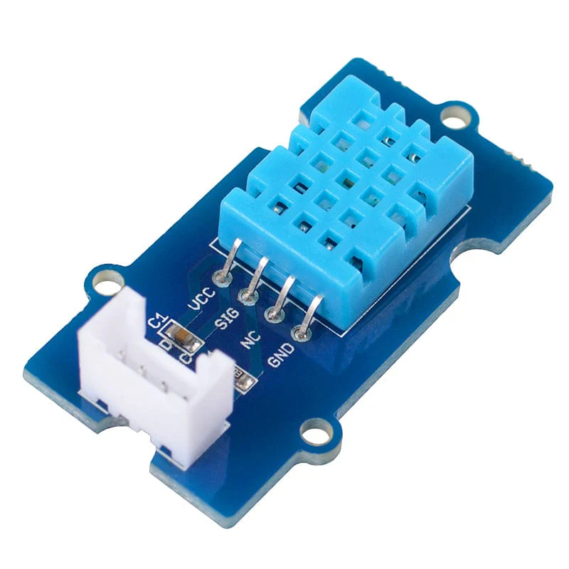
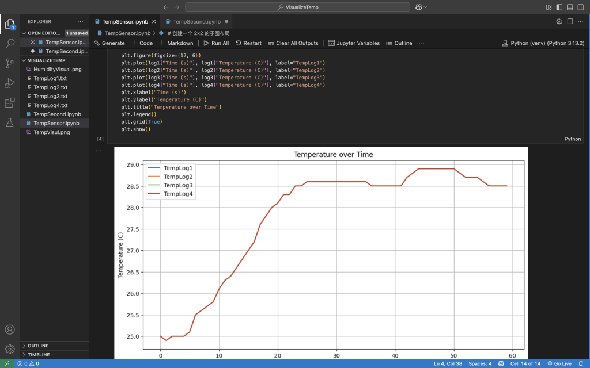
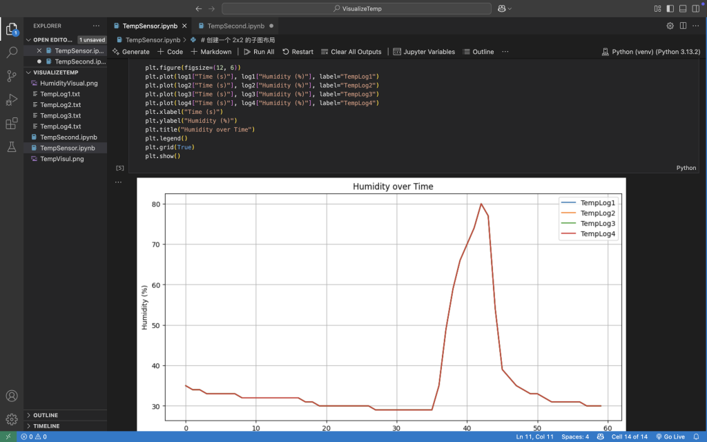
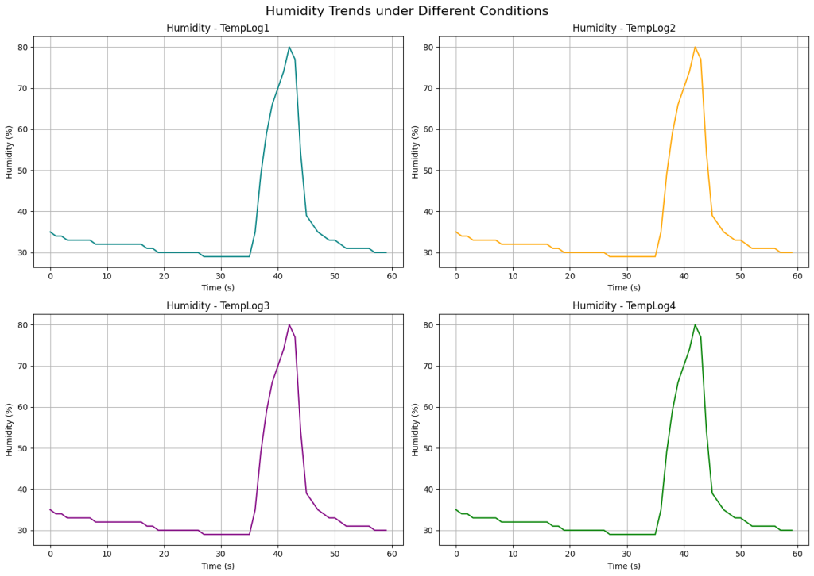
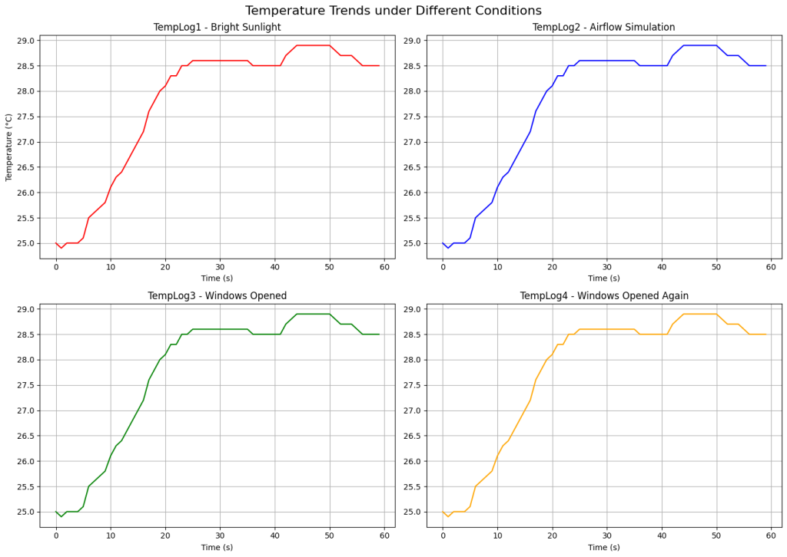

Sensor Used: DHT11 (Temperature & Humidity)
Date: 8 April 2025
Sensor Placement: On top of Raspberry Pi, near window, on the desk

The Pi Hut (n.d.) Grove – Temperature & Humidity Sensor (DHT11) [Online image]. Available at: The Pi Hut website (Accessed: 20 May 2025)
In this task, I used a DHT11 temperature and humidity sensor connected to a Raspberry Pi, I recorded environmental data at four different times throughout a single day. Alongside each two-minute sensing session, I closely observed the space around me — noting sound, light, movement, and atmosphere. Rather than focusing purely on numbers and datas, I aimed to compare what the sensor could detect with what I could feel and experience as a person.
This process helped me discover where human senses and sensor data align, and where they diverge. Sometimes, subtle changes in airflow or mood were deeply noticeable to me but invisible to the sensor. At other times, the sensor caught gradual humidity shifts that I would have overlooked. Through this reflection, I began to think about how sensing could be made more experiential and interactive like turning data into something people can see, hear, or feel in real time.
Session 1 – 15:19–15:21
TempLog1DownloadWhere I placed the sensor: On the Raspberry Pi, near the window (window closed)
Sensor data
- Highest temperature: 41°C (I placed my hands around it)
- Lowest temperature: 25°C
- Humidity range: 35%–80%
What I noticed
• Sounds: Very quiet
• Movement: None. The room had 4 people, all sitting still
• Light: Bright direct sunlight
• Other: Room felt still and warm, slight heat build-up on Pi
What surprised me today
The temperature rose dramatically (35–41°C) when I placed my hands around the sensor. It showed how sensitive the sensor was to nearby heat, especially body heat.
What the sensor missed
It didn’t reflect how dry or stale the air felt, humidity was just a number.
How this session felt
Warm and still. My awareness increased after comparing my body’s experience with the sensor’s numbers.
Session 2 – 15:48–15:50
TempLog2DownloadWhere I placed the sensor: Same location
Sensor data
• Temperature range: 25°C to 28.9°C
• Humidity range: 30%–74%
What I noticed
• Sounds: Low conversation
• Movement: I shook a book above the sensor to simulate airflow
• Light: Afternoon sun still present
• Other: Air felt fresher during shaking, but sensor only showed small changes
What surprised me today
The temperature barely dropped despite the active airflow from book-shaking.
What the sensor missed
It didn’t pick up airflow or movement, just temperature, even though the sensation of cooling was strong to me.
How this session felt
More “interactive” as I was consciously altering the space and paying attention to cause and effect.
Session 3 – 16:13–16:15
TempLog3DownloadWhere I placed the sensor: Same location
Sensor data
• Temperature: 25°C to 28.9°C
• Humidity: 30%–80%
What I noticed
• Sounds: I screamed into the sensor and breathed heavily on it
• Movement: None otherwise
• Light: Still bright
• Other: The sensor responded slowly, but temperature rose a bit
What surprised me today
Screaming into the sensor and breathing didn’t cause as big a spike as I expected. The sensor is less responsive to sound or sudden breath than it is to steady body heat.
What the sensor missed
No response to loud sound. Even if the environment felt active, the sensor’s numbers didn’t change significantly.
How this session felt
Kind of strange. I was loud and disruptive but the data remained calm.
Session 4 – 16:51–16:53
TempLog4DownloadWhere I placed the sensor: Same location
Sensor data
Temperature: 25°C to 28.9°C
Humidity: 30%–80%
What I noticed
Sounds: Light movement
Movement: 4 people in room, low activity
Light: Artificial lights on, windows had been open for 10 minutes
Other: Air felt more balanced
What surprised me today: The space felt fresh and lively after having the windows open, even though temperature stayed about the same.
What the sensor missed: The improvement in perceived air quality and mood of the room.
How this session felt: The space felt more breathable and relaxed after window opened.
Visualising the Data with Jupyter Notebook
To better understand the patterns in the temperature and humidity data I collected, I used Jupyter Notebook to visualize the data for these four time periods. I first wrote a Python script to parse the raw sensor logs and converted them into structured data using Pandas. Then, I created line charts and subplot comparisons with matplotlib to observe how the environment changes at different times of the day.
Initially, I tried plotting temperature and humidity data from four different experimental conditions on one graph for intuitive trend comparison, using plt.plot() in matplotlib with distinct colors and legend labels for each curve.
However, although I clearly used different colors, the graph showed almost only one line for both temperature and humidity data. This was because the values recorded by sensors in the four experiments were too close, with extremely high overlap between the lines, making them visually indistinguishable.


To solve the problem that all data overlapped on one graph with barely visible differences, I switched to using matplotlib’s subplot method, plotting the four sets of experimental data in four small sub-graphs respectively. In this way, the slight temperature changes in each group can be presented more clearly.
fig, axs = plt.subplots(2, 2, figsize=(14, 10)) # Create into 2*2 graphs
# Each graph represent a set of data
axs[0, 0].plot(log1["Time (s)"], log1["Temperature (C)"], color='red')
axs[0, 0].set_title("TempLog1 - Bright Sunlight")
axs[0, 0].set_ylabel("Temperature (°C)")
axs[0, 1].plot(log2["Time (s)"], log2["Temperature (C)"], color='blue')
axs[0, 1].set_title("TempLog2 - Airflow Simulation")
axs[1, 0].plot(log3["Time (s)"], log3["Temperature (C)"], color='green')
axs[1, 0].set_title("TempLog3 - Windows Opened")
axs[1, 1].plot(log4["Time (s)"], log4["Temperature (C)"], color='orange')
axs[1, 1].set_title("TempLog4 - Windows Opened Again")
for ax in axs.flat:
ax.set_xlabel("Time (s)")
ax.grid(True)
plt.suptitle("Temperature Trends under Different Conditions", fontsize=16)
plt.tight_layout()
plt.show()The improvements brought by this approach:
- Each temperature curve has its exclusive space without mutual occlusion.
- Subplot titles clearly mark the corresponding experimental conditions.
- The graph becomes neater and easier to compare change trends across different experiments.

Each subplot shows the humidity change over 120 seconds, these data were collected at a frequency of once every 2 seconds within 2 minutes, so each group of data contains approximately 60 records and all in different conditions.
- All four sessions show a sudden spike in humidity between 35s–45s, likely caused by close-range breathing or hand warmth.
- Interestingly, even under different environmental setups (sunlight, airflow, open windows), the pattern is almost identical, showing the sensor’s sensitivity to human proximity rather than ambient room changes.
- This suggests that short-term human interaction with the sensor can strongly affect its readings something to consider when designing interactions based on such data.

Temperature rises gradually over time in all sessions, regardless of conditions:
- In all four charts, we see a smooth and steady increase, from around 25°C to nearly 29°C.
- Unlike humidity, temperature is less responsive to short human input, and more influenced by accumulated heat over time.
- The minor variations may reflect slight differences in room activity, light, or window positioning.
Reflection on Data Similarity
After visualising all four sets of experimental data, I noticed that they appeared strikingly similar in overall trend, making them difficult to distinguish. Both the temperature and humidity readings showed very minor variations between sessions.
I believe this similarity can be attributed to several factors:
- All experiments were conducted on the same day, in the same room, where the environmental conditions (temperature, humidity, lighting) remained fairly constant.
- The interactions we introduced such as book-shaking, breathing, or opening windows were relatively subtle or short-lived, and may not have been enough to produce significant changes in the readings.
- The sensor used (DHT11) has a limited resolution and slower response time, which may prevent it from detecting small or rapid changes in the environment.
As a result, the data across different sessions showed very little variation, making it challenging to draw clear distinctions between experimental conditions based solely on the sensor output.
Overall Reflections
- Did the sensor change how I looked at the space? Yes. I started noticing how small actions like placing hands, opening a window, or even shouting can (or cannot) affect the environment, and how sometimes our perception diverges from what data shows.
- Did the sensor catch anything I missed? Yes, such as gradual humidity shifts I wouldn’t have noticed otherwise.
- Were there things only I could spot? Definitely. The feeling of air flow, human energy, tension in the room, or emotional tone all invisible to the sensor.
Interactive Sensing Idea
“The Breathing Room”
Idea: Convert sensor data into human-perceivable feedback
- Temperature → Colour gradient on a projection to the wall
- Humidity → Ambient sound: low humidity = dry crackling, high humidity = muffled rain sounds
- Data feedback -> Projected over a room, updating live
Interactions:
- People wave hands over sensor — light ripples react (motion sensing + heat mapping)
- Changes in environment shown through lighting fading or soundscape morphing
Benefits:
- Good for classrooms, meditation spaces, shared environments
- Makes invisible patterns feel real
- Encourages attention to space